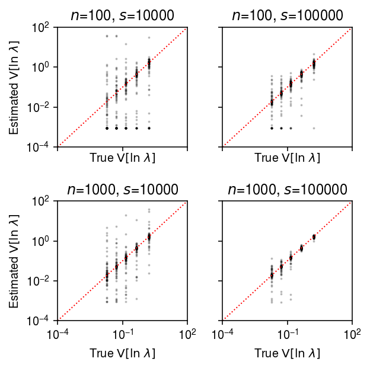
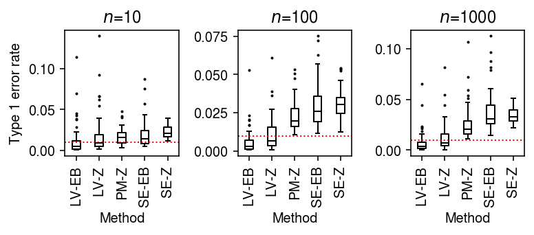
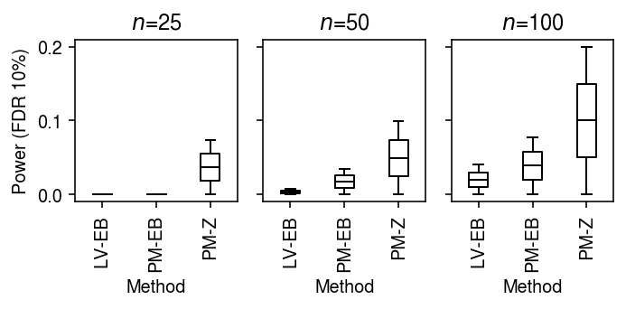
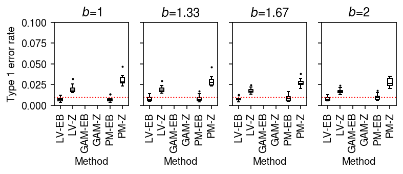

An improved voom transform for scRNA-seq data
Table of Contents
Introduction
The key idea of limma-voom (Law et al. 2014) is to transform a count matrix generated by bulk RNA-seq into two matrices, representing the mean and variance of true (log) gene expression. These matrices can then be analyzed using (heteroscedastic) Gaussian methods. However, limma-voom was developed before the development of scRNA-seq, and therefore before it was possible to measure the variance of gene expression between cells from a single donor. To address this limitation, Law et al. instead proposed to pool information across both donors and genes, estimating a LOESS trend between the mean and variance of true gene expression values across donors. \( \DeclareMathOperator\E{E} \DeclareMathOperator\Gam{Gamma} \DeclareMathOperator\Poi{Poisson} \DeclareMathOperator\V{V} \DeclareMathOperator\digamma{\psi} \DeclareMathOperator\trigamma{\psi^{(1)}} \newcommand\vb{\mathbf{b}} \newcommand\vc{\mathbf{c}} \newcommand\xiplus{x_{i+}} \)
Now suppose we have observed scRNA-seq data \(x_{ij}\), where \(x_{ij}\) denotes the number of molecules from gene \(j\) observed in cell \(i\). Then, there are two possible DE analysis we might be interested in. First, we might divide (some subset of) cells into two groups, and ask whether genes are differentially expressed between groups. Second, we might divide donors into groups, and test whether genes (in some subset of cells, per donor) are differentially expressed between groups. The key distinction is that single cells are the units in the first case, and donors are the units in the second case.
We can apply limma-voom without modification to the first case, because the typical log transformation corresponds to an MLE
\begin{align} x_{ij} \mid \xiplus, \theta_{ij} &\sim \Poi(\xiplus \exp(\theta_{ij}))\\ \ell \triangleq \ln p(x_{ij} \mid \xiplus, \theta_{ij}) &= x_{ij} (\ln \xiplus + \theta_{ij}) - \xiplus \exp(\theta_{ij}) + \mathrm{const}\\ \frac{\partial \ell}{\partial \theta_{ij}} &= x_{ij} - \xiplus \exp(\theta_{ij})\\ \hat\theta_{ij} &= \ln\left(\frac{x_{ij}}{\xiplus}\right). \end{align}This simple theoretical argument and empirical studies have demonstrated that applying limma-voom to scRNA-seq data can work (Soneson and Robinson 2018, Hsiao 2019). However, unlike the bulk RNA-seq case, now the notion of “variance of gene expression” within a single unit no longer makes sense. Therefore, it is unclear what precisely limma-voom is fitting in this case.
Applying limma-voom to the second case also works, because we can estimate a point mass expression model for the cells from each donor \(k\)
\begin{align} x_{ij} \mid \xiplus, \theta_j &\sim \Poi(\xiplus \exp(\theta_j))\\ \ell \triangleq \sum_i \ln p(x_{ij} \mid \xiplus, \theta_j) &= \sum_i x_{ij} (\ln \xiplus + \theta_j) - \xiplus \exp(\theta_j) + \mathrm{const}\\ \frac{\partial \ell}{\partial \theta_j} &= \sum_i x_{ij} - \xiplus \exp(\theta_j)\\ \theta_j &= \ln\left(\frac{\sum_i x_{ij}}{\sum_i \xiplus}\right)\\ \end{align}where \(\xiplus \triangleq \sum_j x_{ij}\) (Sarkar and Stephens 2020). This approach is equivalent to constructing pseudobulk data \(y_{kj} \triangleq \sum_i x_{ij} z_{ik}\), where \(z_{ik}\) indicates whether cell \(i\) came from donor \(k\), and using \(\ln(y_{kj} / y_{k+})\) as the estimated mean of true log gene expression, where \(y_{k+} \triangleq \sum_j y_{kj}\). However, the relationship between the voom-estimated variance and the true gene expression variance is unclear because the variance used by voom is between individuals, not within an individual (although there is some evidence that the two are highly correlated). Further, it is unlikely that a point mass expression model will be supported by the data.
We previously developed a method to efficiently estimate more complex expression models in large-scale scRNA-seq data sets (Sarkar et al. 2019). Here, we use that method to investigate two new possibilities for a precision weight derived from fitted expression models: (1) the inverse squared standard error of a point mass model, or (2) the inverse variance of the log true expression under a Gamma model. Specifically, we ask whether these alterantive approaches improve the power or robustness of DE analysis in scRNA-seq data.
Setup
import anndata import numpy as np import mpebpm import pandas as pd import scanpy as sc import rpy2.robjects.packages import rpy2.robjects.pandas2ri import scipy.special as sp import scipy.sparse as ss import scipy.stats as st import sqlite3 import scqtl limma = rpy2.robjects.packages.importr('limma') rpy2.robjects.pandas2ri.activate()
%matplotlib inline %config InlineBackend.figure_formats = set(['retina'])
import matplotlib.pyplot as plt plt.rcParams['figure.facecolor'] = 'w' plt.rcParams['font.family'] = 'Nimbus Sans'
Methods
Standard error of point mass expression model
The standard error of \(\hat\theta_j\) is analytic
\begin{align} \frac{\partial^2 \ell}{\partial \theta_j^2} &= -\sum_i \xiplus \exp(\theta_j)\\ \mathcal{I}(\mu_j) &= -\E\left[\frac{\partial^2 \ell}{\partial \mu_j^2}\right] = \sum_i \xiplus \exp(\theta_j)\\ s_j^2 &= \frac{1}{\sum_i \xiplus \exp(\theta_j)}, \end{align}where we have treated \(\xiplus\) as fixed. This treatment is justified by the fact that the Poisson measurement model for each gene arises from a Multinomial measurement model for all genes jointly, in which the total number of molecules observed is fixed rather than a sum of random variables. As an illustrative example, plot the bootstrap distribution of the \(\hat\theta_j\) against a normal density with mean \(\theta_j\) and variance \(s_j^2\) for a simple simulation.
rng = np.random.default_rng(1) n_trials = 1000 n = 100 s = 1e4 theta = -10 thetahat = [] for i in range(n_trials): x = rng.poisson(s * np.exp(theta), size=n) thetahat.append(np.log(x.sum()) - np.log(n) - np.log(s)) thetahat = np.array(thetahat)
plt.clf() plt.gcf().set_size_inches(2.5, 2.5) plt.hist(thetahat, bins=16, density=True, color='0.7') grid = np.linspace(thetahat.min(), thetahat.max(), 1000) plt.plot(grid, st.norm(loc=theta, scale=np.sqrt(1 / (np.exp(theta) * n * s))).pdf(grid), lw=1, c='k') plt.xlabel('Est ln mean gene expression') plt.ylabel('Density') plt.tight_layout()
After introducing multiplicative effects \(\vb_j\) for observed technical covariates \(\vc_i\) into the measurement model
\begin{equation} x_{ij} \mid \xiplus, \vc_i, \vb_j, \theta_j \sim \Poi(\xiplus \exp(\vc_i' \vb_j + \theta_j)), \end{equation}the standard error of \(\hat\theta_j\) also depends on \(\vc_i'\vb_j\). In contrast, if we assume the identity link
\begin{align} x_{ij} \mid \xiplus, \mu_j &\sim \Poi(\xiplus \mu_j)\\ \ell \triangleq \sum_i \ln p(x_{ij} \mid \xiplus, \mu_j) &= \sum_i x_{ij} \ln(\xiplus \mu_j) - \xiplus \mu_j + \mathrm{const}\\ \frac{\partial \ell}{\partial \mu_j} &= \sum_i \frac{x_{ij}}{\mu_j} - \xiplus\\ \hat\mu_j &= \frac{\sum_i x_{ij}}{\sum_i \xiplus}\\ \frac{\partial^2 \ell}{\partial \mu_j^2} &= -\sum_i \frac{x_{ij}}{\mu_j^2}\\ \mathcal{I}(\mu_j) &= -\E\left[\frac{\partial^2 \ell}{\partial \mu_j^2}\right] = \frac{\E[\sum_i x_{ij}]}{\mu_j^2} = \frac{\sum_i \xiplus}{\mu_j}\\ s_j^2 &= \frac{\mu_j}{\sum_i \xiplus}, \end{align}where we have used the fact that \(\sum_i x_{ij} \sim \Poi(\mu_j \sum_i \xiplus)\). Surprisingly, \(\ln \hat\mu_j = \hat\theta_j\), the standard error of \(\hat\mu_j\) increases as \(\mu_j\) increases, and the standard error does not depend on technical covariates or their effects. As a sanity check, plot the bootstrap distribution of \(\hat\mu_j\) against a normal density with mean \(\theta_j\) and variance \(s_j^2\) for a simple simulation.
rng = np.random.default_rng(2) n_trials = 500 n = 100 s = 1e4 log_mu = -10 muhat = [] for i in range(n_trials): x = rng.poisson(s * np.exp(log_mu), size=n) muhat.append(x.sum() / (n * s)) muhat = np.array(muhat)
plt.clf() plt.gcf().set_size_inches(2.5, 2.5) plt.hist(muhat, bins=14, density=True, color='0.7') grid = np.linspace(muhat.min(), muhat.max(), 1000) plt.plot(grid, st.norm(loc=muhat.mean(), scale=np.sqrt(muhat[0] / (n * s))).pdf(grid), lw=1, c='k') plt.xlabel('Est mean gene expression') plt.ylabel('Density') plt.tight_layout()

Variance of Gamma expression model
Assuming a Gamma expression model
\begin{align} \lambda_{ij} &\sim \Gam(\phi_j^{-1}, \mu_j^{-1} \phi_j^{-1})\\ \E[\ln \lambda_{ij}] &= \digamma(\phi_j^{-1}) + \ln(\mu_j \phi_j)\\ \V[\ln \lambda_{ij}] &= \trigamma(\phi_j^{-1}), \end{align}where the Gamma distribution is parameterized by shape and rate, \(\digamma(\cdot)\) denotes the digamma function, and \(\trigamma(\cdot)\) denotes the trigamma function. We previously noted that robustly estimating \(\phi_j\) is difficult, even from hundreds of cells per condition; despite this difficulty, our method can still accurately estimate the variance of true gene expression.
Improved limma
Given transformed data and standard errors, DE analysis is performed in two steps:
- Estimate the effect of the covariate of interest by GLS
- Estimate moderated test statistics and \(p\)-values by EB treatment of the standard errors from (1)
Lu and Stephens 2019 describe a more powerful approach to solve (2).
Simulation
Implement a simplified DSC.
def simulate_null(dat, n_donors=2, n_cells=100, to_array=True, to_dense=False, min_counts=1, seed=0): """Return counts and labels counts - matrix [n_donors * n_cells, n_genes] labels - CSR matrix [n_donors * n_cells, n_donors] """ query = sc.pp.subsample(dat, n_obs=n_donors * n_cells, random_state=seed, copy=True) sc.pp.filter_genes(query, min_counts=min_counts) onehot = ss.coo_matrix((np.ones(query.shape[0]), (np.arange(query.shape[0]), np.repeat(np.arange(n_donors), n_cells)))).tocsr() if not to_array: return query, onehot elif to_dense: return query.X.A, onehot.A else: return query.X, onehot def estimate_limma_voom(x, onehot, design=None, **kwargs): """Return DataFrame of bhat, se""" # Important: limma expects genes x samples if design is None: design = np.vstack([onehot[:,0], np.ones(x.shape[0])]).T y = limma.voom(x.T, design) else: y = limma.voom(x.T @ onehot, design) fit = limma.lmFit(y, design) return fit def estimate_wls_point(x, onehot, design=None, **kwargs): """Return DataFrame of bhat, se Instead of voom, estimate θ_j = log μ_j under a point mass expression model and its sampling variance, and use those as input to WLS. """ s = x.sum(axis=1, keepdims=True) if design is None: log_mean = np.log(x + 1) - np.log(s) # Important: this only reduces when there are no techncial covariates in # the measurement model w = x + 1 design = np.vstack([onehot[:,0], np.ones(x.shape[0])]).T else: log_mean = np.log(onehot.T @ x + 1) - np.log(onehot.T @ s) w = onehot.T @ x + 1 fit = limma.lm_series(log_mean.T, design=design, weights=w.T) return fit def estimate_wls_gamma(x, onehot, design, lr=1e-2, num_epochs=40, batch_size=64, shuffle=True, log_dir=None, **kwargs): """Return DataFrame of bhat, se Instead of voom, estimate E[log λ_{ij}] and V[log λ_{ij}] under a Gamma model, and use those as input to WLS. Important: this only makes sense when donors are units """ import torch # Important: this will be too slow on CPU assert torch.cuda.is_available() s = x.sum(axis=1, keepdims=True) log_mean, log_inv_disp = mpebpm.ebpm_gamma( x, s=s, onehot=onehot, lr=lr, num_epochs=num_epochs, batch_size=batch_size, shuffle=shuffle, log_dir=log_dir) # [n_donors, n_genes] m = sp.digamma(np.exp(log_inv_disp)) + log_mean - log_inv_disp w = 1 / sp.polygamma(1, np.exp(log_inv_disp)) fit = limma.lm_series(m.T, design=design, weights=w.T) return fit def estimate_moderated_t(fit): fit = limma.eBayes(fit) return fit.rx2('p.value')[:,0] def estimate_z(fit): sf = st.chi2(1).sf # Important: this has estimates for the intercept also stat = fit.rx2('coefficients') / fit.rx2('stdev.unscaled') pval = sf(np.square(stat)) return pval[:,0] def evaluate_power(dat, b=None, alpha=0.01, n_cells=100, n_trials=1, min_counts=10): if b is None: b = -np.log(1.5) elif b > 0: b = -b result = [] for i in range(n_trials): # Important: keep this sparse to make downsampling non-zeros easier x, onehot = simulate_null(dat, n_cells=n_cells, to_dense=False, min_counts=min_counts, seed=i) temp = x[:n_cells].astype(int) y = ss.csr_matrix((st.binom(n=temp.data, p=np.exp(b)).rvs().astype(float), temp.indices, temp.indptr), shape=temp.shape) x = ss.vstack((y, x[n_cells:]), format='csr').A onehot = onehot.A # Heuristic: fix total number of updates num_epochs = 6000 * 64 // x.shape[0] for method in ('limma_voom', 'wls_point'): fit = globals()[f'estimate_{method}'](x, onehot, batch_size=64, num_epochs=num_epochs) for test in ('moderated_t', 'z'): pval = globals()[f'estimate_{test}'](fit) result.append((b, n_cells, method, test, i, (pval < alpha).mean())) result = pd.DataFrame(result, columns=['b', 'n_cells', 'method', 'test', 'trial', 'tpr']) return result def evaluate_type1(dat, alpha=0.01, n_cells=100, n_trials=1, min_counts=10): result = (evaluate_power(dat, b=0, alpha=alpha, n_cells=n_cells, n_trials=n_trials, min_counts=min_counts) .rename({'tpr': 'fpr'}, axis=1)) return result def evaluate_power_by_donor(dat, b=None, alpha=0.01, n_donors=4, n_cells=100, n_trials=1, min_counts=10): assert n_donors * n_cells <= dat.shape[0] if b is None: b = -np.log(1.5) elif b > 0: b = -b result = [] for i in range(n_trials): # Important: keep this sparse to make downsampling non-zeros easier x, onehot = simulate_null(dat, n_donors=2 * n_donors, n_cells=n_cells, to_dense=False, min_counts=min_counts, seed=i) temp = x[:n_donors * n_cells].astype(int) y = ss.csr_matrix((st.binom(n=temp.data, p=np.exp(b)).rvs().astype(float), temp.indices, temp.indptr), shape=temp.shape) x = ss.vstack((y, x[n_donors * n_cells:]), format='csr').A design = np.ones((2 * n_donors, 2)) design[:n_donors,0] = 0 # Heuristic: fix total number of updates num_epochs = 6000 * 64 // x.shape[0] for method in ('limma_voom', 'wls_point'): fit = globals()[f'estimate_{method}'](x, onehot, design=design, batch_size=64, num_epochs=num_epochs) for test in ('moderated_t', 'z'): pval = globals()[f'estimate_{test}'](fit) result.append((b, n_cells, method, test, i, (pval < alpha).mean())) result = pd.DataFrame(result, columns=['b', 'n_cells', 'method', 'test', 'trial', 'tpr']) return result def evaluate_type1_by_donor(dat, alpha=0.01, n_trials=1, n_donors=4, n_cells=100, min_counts=10): result = (evaluate_power_by_donor(dat, b=0, alpha=alpha, n_trials=n_trials, n_donors=n_donors, min_counts=min_counts) .rename({'tpr': 'fpr'}, axis=1)) return result
Results
Accuracy of estimation
We previously evaluated mpebpm by simulating
from a point-Gamma expression model. Now, simulate from a Gamma model, and
evaluate the accuracy of estimating \(\V[\ln\lambda_{ij}]\).
def evaluate(num_samples, num_mols, num_trials=10, **kwargs): # Important: generate all of the samples for each trial in one shot, and use # one-hot encoding to get separate estimates args = [(num_samples * num_trials, num_mols, log_mu, log_phi, -1000, None, None, None) for log_mu in np.linspace(-12, -6, 7) for log_phi in np.linspace(-4, 0, 5)] x = np.concatenate([scqtl.simulation.simulate(*a)[0][:,:1] for a in args], axis=1) x = ss.csr_matrix(x) s = num_mols * np.ones((x.shape[0], 1)) onehot = np.zeros((num_samples * num_trials, num_trials)) onehot[np.arange(onehot.shape[0]), np.arange(onehot.shape[0]) // num_samples] = 1 onehot = ss.csr_matrix(onehot) log_mu, neg_log_phi = mpebpm.sgd.ebpm_gamma(x, s=s, onehot=onehot, **kwargs) result = pd.DataFrame( [(a[0] // num_trials, int(a[1]), int(a[2]), int(a[3]), int(a[4]), a[-1], trial) for a in args for trial in range(num_trials)], columns=['num_samples', 'num_mols', 'log_mu', 'log_phi', 'logodds', 'fold', 'trial']) result['mean'] = np.exp(result['log_mu']) result['var'] = (1 - sp.expit(result['logodds'])) * np.exp(2 * result['log_mu'] + result['log_phi']) + sp.expit(-result['logodds']) * (1 - sp.expit(result['logodds'])) * np.exp(2 * result['log_mu']) result['log_mu_hat'] = log_mu.ravel(order='F') result['log_phi_hat'] = -neg_log_phi.ravel(order='F') result['mean_hat'] = np.exp(result['log_mu_hat']) result['var_hat'] = np.exp(2 * result['log_mu_hat'] + result['log_phi_hat']) return result
Run the simulation.
result = [evaluate(num_samples=num_samples, num_mols=int(1e5), batch_size=32, num_epochs=num_epochs, log_dir=f'runs/mpebpm/gamma-sim-{num_samples}/') # Important: for fixed batch size, having more samples means more # updates to each parameter per epoch for num_samples, num_epochs in zip((100, 1000), (200, 20))] pd.concat(result).to_csv('/scratch/midway2/aksarkar/ideas/mpebpm-gamma-sim.txt.gz', sep='\t')
Read the results.
result = pd.read_csv('/scratch/midway2/aksarkar/ideas/mpebpm-gamma-sim.txt.gz', sep='\t', index_col=0)
Compare the estimated \(\V[\ln\lambda_{ij}]\) to the ground truth, limiting only to simulations with \(\ln\mu > -11\). (The performance is much worse for simulations with lower mean expression.)
plt.clf() fig, ax = plt.subplots(1, 2, sharey=True) fig.set_size_inches(4.5, 2.5) lim = [1e-4, 1e2] for a, (k, g) in zip(ax, result.groupby('num_samples')): query = g[g['log_mu'] > -11] a.set_xscale('log') a.set_yscale('log') a.scatter(sp.polygamma(1, np.exp(-query['log_phi'])), sp.polygamma(1, np.exp(-query['log_phi_hat'])), s=1, c='k', alpha=0.2) a.plot(lim, lim, lw=1, ls=':', c='r') a.set_xlim(lim) a.set_ylim(lim) a.set_title(f'$n$={k}') a.set_xlabel('True $\mathrm{V}[\ln\ \lambda]$') ax[0].set_ylabel('Estimated $\mathrm{V}[\ln\ \lambda]$') fig.tight_layout()

Estimation of true effect size distribution
To estimate power controlling FDR, we need to make an assumption about the
true distribution of effect sizes. We will make a data-driven assumption by
estimating the true distribution of effect sizes, given observed effect
sizes and standard errors output by limma-voom on a constructed problem
using ashr.
dat = anndata.read_h5ad('/scratch/midway2/aksarkar/ideas/zheng-10-way.h5ad')
Construct a problem comparing B cells to cytotoxic T cells. Randomly assign 50 sorted cells to each of 128 donors within each cell type.
x1, onehot1 = simulate_null(dat[dat.obs['cell_type'] == 'b_cells'], n_donors=128, n_cells=50, min_counts=1, to_array=False) x2, onehot2 = simulate_null(dat[dat.obs['cell_type'] == 'cytotoxic_t'], n_donors=128, n_cells=50, min_counts=1, to_array=False) mix = x1.concatenate(x2) sc.pp.filter_genes(mix, min_counts=10) onehot = ss.block_diag([onehot1, onehot2], format='csr') design = np.ones((256, 2)) design[:128,0] = 0
Fit limma-voom, followed by EB shrinkage of standard errors.
fit0 = limma.eBayes(estimate_limma_voom(mix.X.A, onehot, design))
Fit ashr, using the moderated standard errors and degrees of freedom.
ashr = rpy2.robjects.packages.importr('ashr') fit1 = ashr.ash( betahat=pd.Series(fit0.rx2('coefficients')[:,0]), sebetahat=pd.Series(np.sqrt((fit0.rx2("df.prior") * fit0.rx2("s2.prior") + fit0.rx2("df.residual") * fit0.rx2("stdev.unscaled")[:,0]) / fit0.rx2("df.total"))), df=fit0.rx2('df.total')[0], mixcompdist='halfuniform')
Look at the fitted prior distribution of true effects. Find an analytic distribution whose tail behavior is close enough.
cm = plt.get_cmap('Paired') grid = np.linspace(-3, 3, 1000) F = ashr.cdf_ash(fit1, grid).rx2('y').ravel() F2 = st.t(scale=0.1, df=1).cdf(grid) plt.clf() plt.gcf().set_size_inches(4.5, 2.5) plt.plot(grid, F, lw=1, c=cm(0), label='ashr') plt.plot(grid, F2, lw=1, c=cm(1), label=f'$t_1(0, 0.1^2)$') plt.axvline(x=0, lw=1, ls=':', c='0.5') plt.legend(frameon=False) plt.xlabel('Prior effect size') plt.ylabel('CDF') plt.tight_layout()
Type 1 error rate (single cells as units)
To generate null data, randomly sample cells from a homogeneous population, and randomly assign labels.
dat = anndata.read_h5ad('/scratch/midway2/aksarkar/ideas/zheng-10-way.h5ad') b_cells = dat[dat.obs['cell_type'] == 'b_cells']
result = evaluate_type1(b_cells, min_counts=10, n_trials=50)
plt.clf() fig, ax = plt.subplots(1, 2) fig.set_size_inches(4.5, 2.5) labels = ['LV-EB', 'LV-Z', 'PM-EB', 'PM-Z'] for i, (k, g) in enumerate(result.groupby(['method', 'test'])): ax[0].boxplot(g['fpr'], positions=[i], widths=0.35, medianprops={'color': 'k'}, flierprops={'marker': '.', 'markersize': 2}) ax[1].boxplot(g['fpr'], positions=[i], widths=0.35, medianprops={'color': 'k'}, flierprops={'marker': '.', 'markersize': 2}) ax[1].set_ylim(0, 0.02) for a in ax: a.axhline(y=0.01, c='r', lw=1, ls=':') a.set_xticks(range(len(labels))) a.set_xticklabels(labels, rotation=90) a.set_xlabel('Method') ax[0].set_ylabel('Type 1 error rate') fig.tight_layout()

Pathological example
Extract the case where limma-voom does worst.
query = result.loc[(result['method'] == 'limma_voom') & (result['test'] == 'moderated_t') & (result['fpr'] > 0.2)] x, onehot = simulate_null(b_cells, n_cells=200, min_counts=10, seed=query['trial'], to_dense=True) fits = {method: globals()[f'estimate_{method}'](x, onehot) for method in ('limma_voom', 'wls_point')}
Look at the distributions of estimated effect sizes.
plt.clf() fig, ax = plt.subplots(1, 2) fig.set_size_inches(4.5, 2.5) grid = np.linspace(-.3, .3, 1000) for a, k in zip(ax, fits): a.hist(fits[k].rx2('coefficients')[:,0], bins=15, color='0.7') a.plot(grid, st.norm(scale=fits[k].rx2('stdev.unscaled')[:,0].mean()).pdf(grid), c='k', lw=1) a.set_title(k) a.set_xlabel('Effect size') ax[0].set_ylabel('Density') fig.tight_layout()
Look at the relationship between estimated effect size and estimated standard error.
cm = plt.get_cmap('Dark2') plt.clf() fig, ax = plt.subplots(1, 2) fig.set_size_inches(5, 2.5) for a, k in zip(ax, ['coefficients', 'stdev.unscaled']): a.scatter(fits['limma_voom'].rx2(k)[:,0], fits['wls_point'].rx2(k)[:,0], s=1, c='k', alpha=0.1) a.set_xlabel(f'limma-voom {k}') a.set_ylabel(f'wls-SE {k}') lim = [-.5, .5] ax[0].plot(lim, lim, lw=1, ls=':', c='r') lim = [0, .1] ax[1].plot(lim, lim, lw=1, ls=':', c='r') fig.tight_layout()
Plot the voom-estimated weights against the point mass–estimated weights.
y = limma.voom(x.T) w0 = y.rx2('weights').T w1 = x + 1
plt.clf() plt.gcf().set_size_inches(2.5, 2.5) plt.scatter(y.rx2('E').ravel(), y.rx2('weights'), s=1, c='k', alpha=0.1) plt.xlabel('$\ln(10^6 (y + .5) / (s + 1))$') plt.ylabel('Weight') plt.tight_layout()
plt.clf() plt.gcf().set_size_inches(2.5, 2.5) plt.scatter(w0.ravel(), w1.ravel(), s=1, c='k', alpha=0.1) plt.xlabel('voom weight') plt.ylabel('Point mass inverse var') plt.tight_layout()
Power (single cells as units)
To generate true positives treating cells as units, randomly sample cells from a homogeneous population, randomly assign labels, and then use binomial thinning (Gerard 2019) to introduce effects of a given magnitude.
result = [] for b in -np.log(np.linspace(1.05, 1.5, 20)): result.append(evaluate_power(b_cells, b=b, alpha=0.1, n_trials=1)) result = pd.concat(result)
cm = plt.get_cmap('Paired') plt.clf() plt.gcf().set_size_inches(3.5, 2.5) labels = ['LV-EB', 'LV-Z', 'PM-EB', 'PM-Z'] for i, (k, g) in enumerate(result.groupby(['method', 'test'])): plt.plot(np.exp(-g['b']), g['tpr'], lw=1, c=cm(i), marker='.', ms=4, label=labels[i]) plt.legend(frameon=False, loc='center left', bbox_to_anchor=(1, .5)) plt.xlabel('True effect size') plt.ylabel(r'Power ($\alpha$=0.01)') plt.ylim(0, 1) plt.tight_layout()

Type 1 error rate (donors as units)
To generate null data, first randomly assign cells from a homogeneous sample to donors, then randomly assign donors to groups.
dat = anndata.read_h5ad('/scratch/midway2/aksarkar/ideas/zheng-10-way.h5ad') b_cells = dat[dat.obs['cell_type'] == 'b_cells']
result = evaluate_type1_by_donor(b_cells, min_counts=10, n_trials=50)
plt.clf() fig, ax = plt.subplots(1, 2) fig.set_size_inches(4.5, 2.5) labels = ['LV-EB', 'LV-Z', 'GAM-EB', 'GAM-Z', 'PM-EB', 'PM-Z'] for i, (k, g) in enumerate(result.groupby(['method', 'test'])): ax[0].boxplot(g['fpr'], positions=[i], widths=0.35, medianprops={'color': 'k'}, flierprops={'marker': '.', 'markersize': 2}) ax[1].boxplot(g['fpr'], positions=[i], widths=0.35, medianprops={'color': 'k'}, flierprops={'marker': '.', 'markersize': 2}) ax[1].set_ylim(0, 0.02) for a in ax: a.axhline(y=0.01, c='r', lw=1, ls=':') a.set_xticks(range(len(labels))) a.set_xticklabels(labels, rotation=90) a.set_xlabel('Method') ax[0].set_ylabel('Type 1 error rate') fig.tight_layout()

Power (donors as units)
To generate true positives treating donors as units, randomly sample cells from a homogeneous population, randomly assign cells to donors, randomly assign donors to groups, and then thin all cells assigned to the effect group equally.
result = [] for b in -np.log(np.linspace(1, 2, 20)): result.append(evaluate_power_by_donor(b_cells, b=b, n_donors=64, n_cells=50, alpha=0.01, n_trials=1)) result = pd.concat(result) result.to_csv('/scratch/midway2/aksarkar/singlecell/limma-voom-power-by-donor-40.txt.gz')
cm = plt.get_cmap('Paired') plt.clf() plt.gcf().set_size_inches(3.5, 2.5) labels = ['LV-EB', 'LV-Z', 'GAM-EB', 'GAM-Z', 'PM-EB', 'PM-Z'] for i, (k, g) in enumerate(result.groupby(['method', 'test'])): plt.plot(np.exp(-g['b']), g['tpr'], lw=1, c=cm(i), marker='.', ms=4, label=labels[i]) plt.legend(frameon=False, loc='center left', bbox_to_anchor=(1, .5)) plt.xlabel('True effect size') plt.ylabel(r'Power ($\alpha$=0.01)') plt.ylim(0, 1) plt.tight_layout()